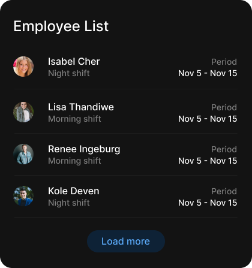
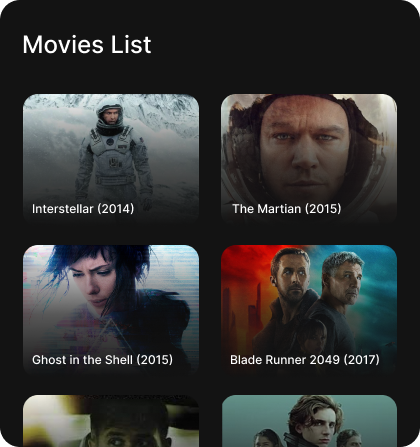

Card ou Lista
Tudo depende do contexto das informações.
Cards (ou cartões) e listas são dois modos comuns de organizar informações em uma página. O uso de cada um vai da situação em que cada se encaixa pra uma melhor experiência. O papel do designer é entender a situação pra usar da melhor forma.
Lista

Uma lista basicamente é uma página/componente com várias entradas ou itens destinados a corresponder os critérios de pesquisa do usuário.
Listas são boas pra quando você precisa mostrar vários itens com informações que precisam ser visualmente escaneáveis, como uma tabela de usuários, por exemplo, que contenha informações como nome, email, telefone e etc.
Card

Um card é um container com informações relacionadas que apresenta um sumário das informações. É um ponto de entrada para informações mais detalhadas. Se tornou muito popular com o Pinterest, e desde então grandes empresas começaram a adotar esse estilo.
Eles funcionam melhor quando o intuito é apenas dar um resumo do conteúdo, instigar para exploração de mais informações e quando tem mais elementos visuais, como uma imagem.
Não existe certo ou errado, mas uma das opções vai atingir seus objetivos melhor. O importante é pensar sobre a sua escolha.